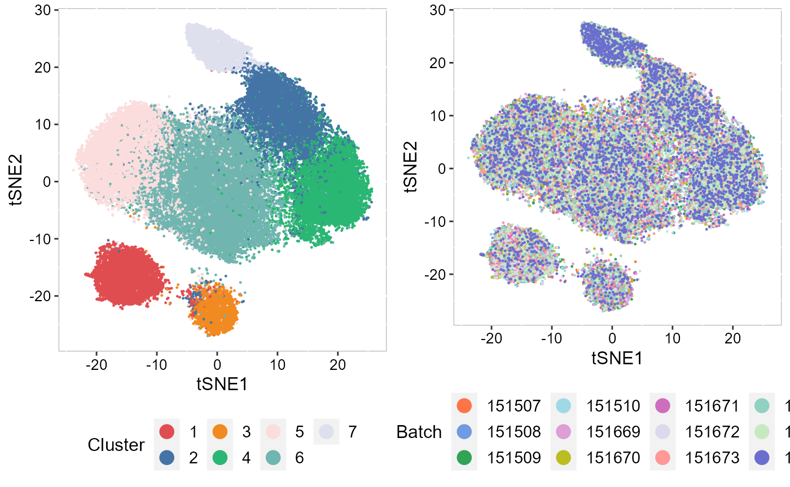

vignettes/integration_large_datasets.Rmd
integration_large_datasets.RmdThis tutorial demonstrates how to use SRTpipeline (>=0.1.0) to analyze multiple spatially-resolved transcriptomics (SRT) data. For very large datasets (such as the number of spots greater than 1000k), the PRECAST model can sometimes be prohibitively computationally expensive since this model jointly performs dimension reduction, spatial clustering and embedding alignment. As an alternative, iSC.MEB performs spatial clustering and embedding alignment on the principal component scores (PCs) space rather than the gene expression space, which can greatly increase the computational efficiency. In this workflow, based on iSC.MEB model, we employ two tips that can further improve its efficiency and runtimes:
The main one of efficiency improvements are gained in AddPCA() by setting the Method='APCA'. This means one uses an approximate PCA to obtain the PCs.
First, we load SRTpipeline.
library(SRTpipeline)
set.seed(2023)For this tutorial, we will introduce how to create a SRTProject object with multiple SRT samples using SRTpipeline that includes an introduction to common analytical workflows for multiple data batches. Here, we will be taking spatial transcriptomics dataset for human dorsolateral prefrontal cortex (DLPFC) as an example. There are 12 tissue slices with 3500~4500 spots and 33538 genes that were sequenced on the 10x Visium platform. Our preprocessed data can be downloaded here, and the raw data can be found here.
Next, we download the data to the current working path for the followed analysis by the following command:
name_ID12 <- as.character(c(151507, 151508, 151509, 151510, 151669, 151670, 151671, 151672, 151673,
151674, 151675, 151676))
for (r in seq_along(name_ID12)) {
githubURL <- paste0("https://github.com/feiyoung/DR-SC.Analysis/blob/main/data/DLPFC_data/",
name_ID12[r], ".rds?raw=true")
download.file(githubURL, paste0("dlpfc_", name_ID12[r], ".rds"), mode = "wb")
}Then load to R and prepare for creating the SRTProject object.
dir_file <- "D:/LearnFiles/Research paper/ProPCA/DR-SC.Analysis/data/DLPFC_data/"
name_ID12 <- as.character(c(151507, 151508, 151509, 151510, 151669, 151670, 151671, 151672, 151673,
151674, 151675, 151676))
# dir_file <- './dlpfc_'
n_sample <- length(name_ID12)
library(Seurat)
## create count matrix list: note each component has a name, i.e., `ID151672`.
cntList <- list()
## create spatial coordinate matrix
coordList <- list()
## create metadata list
metadataList <- list()
for (r in 1:n_sample) {
# r <- 1
message("r = ", r)
id <- name_ID12[r]
dlpfc <- readRDS(paste0(dir_file, id, ".rds"))
sp_count <- dlpfc@assays@data$counts
meta.data <- data.frame(annotated_label = dlpfc$layer_guess_reordered, row = dlpfc$row, col = dlpfc$col)
row.names(meta.data) <- colnames(sp_count)
cntList[[r]] <- sp_count
metadataList[[r]] <- meta.data
coordList[[r]] <- cbind(row = dlpfc$row, col = dlpfc$col)
}
names(cntList) <- name_ID12
## create meta data for each data batches. Here we only have one data batch.
sampleMetadata <- data.frame(species = rep("Human", n_sample), tissues = rep("DLPFC", n_sample),
donor = rep(1:3, each = 4))
row.names(sampleMetadata) <- names(cntList)
## Name of this project
projectName <- "DLPFC12"We check the data by printing it. We can see there are 3500~4500 spots and 33538 genes for each data batch.
sapply(cntList, dim)## 151507 151508 151509 151510 151669 151670 151671 151672 151673 151674
## [1,] 33538 33538 33538 33538 33538 33538 33538 33538 33538 33538
## [2,] 4226 4384 4789 4634 3661 3498 4110 4015 3639 3673
## 151675 151676
## [1,] 33538 33538
## [2,] 3592 3460Check whether each data batch has the same genes: Yes.
geneNamesList <- lapply(cntList, row.names)
shared_genes <- Reduce(intersect, geneNamesList)
length(shared_genes)## [1] 33538Because the gene name is ensembl in this data, we change the genes’ ensembl name to symbols for convenience of followed analyses.
cntList <- lapply(cntList, function(x) x[shared_genes, ])
## Use eg.db database: this method is fast
symbol_name <- transferGeneNames(shared_genes, now_name = "ensembl", to_name = "symbol", species = "Human",
Method = "eg.db")
for (r in 1:n_sample) {
row.names(cntList[[r]]) <- symbol_name
}
getwd()## [1] "F:/Research paper/IntegrateDRcluster/AnalysisCode/SRTpipeline/vignettes"Next, we start creating SRTProject object.
SRTProj <- CreateSRTProject(cntList, coordList, projectName = projectName, metadataList, sampleMetadata,
min.spots = 20, min.genes = 20, force = F)
SRTProj## class: SRTProject
## outputPath: F:\Research paper\IntegrateDRcluster\AnalysisCode\SRTpipeline\vignettes\DLPFC12
## h5filePath: F:\Research paper\IntegrateDRcluster\AnalysisCode\SRTpipeline\vignettes\DLPFC12/DLPFC12.h5
## ---------Datasets basic information-----------------
## samples(12): 151507 151508 ... 151675 151676
## sampleColData names(4): species tissues donor NumOfSpots
## cellMetaData names(4): annotated_label row col batch
## numberOfSpots(12): 4226 4384 ... 3592 3460
## ---------Downstream analyses information-----------------
## Low-dimensional embeddings(0):
## Inferred cluster labels: No
## Embedding for plotting(0):After removing unwanted cells and genes from the dataset, the next step is to normalize the data. To save RAM memory, normalized values are stored in disk as a h5file.
## Normalizing the data
SRTProj <- normalizeSRT(SRTProj, normalization.method = "LogNormalize")
## Choose highly variable features
SRTProj <- selectVariableFeatures(SRTProj, nfeatures = 2000, type = "HVGs", method = "vst")
## Calculate the adjcence matrix
SRTProj <- AddAdj(SRTProj, platform = "Visium")After running AddPCA, we would see the output of SRTProj includes PCA in the Low-dimensional embeddings field.
## APCA
SRTProj <- AddPCA(SRTProj, n_comp = 15, Method = "APCA")
SRTProj## class: SRTProject
## outputPath: F:\Research paper\IntegrateDRcluster\AnalysisCode\SRTpipeline\vignettes\DLPFC12
## h5filePath: F:\Research paper\IntegrateDRcluster\AnalysisCode\SRTpipeline\vignettes\DLPFC12/DLPFC12.h5
## ---------Datasets basic information-----------------
## samples(12): 151507 151508 ... 151675 151676
## sampleColData names(4): species tissues donor NumOfSpots
## cellMetaData names(4): annotated_label row col batch
## numberOfSpots(12): 4226 4384 ... 3592 3460
## ---------Downstream analyses information-----------------
## Variable features: 2000
## Low-dimensional embeddings(1): PCA
## Inferred cluster labels: No
## Embedding for plotting(0):Using a proir \(K=7\), iSC.MEB model runs faster.
tic <- proc.time()
SRTProj <- Integrate_iSCMEB(SRTProj, K = 7, reduction = "PCA", init.start = 5)## fitting ...
##
|
| | 0%
|
|=================================== | 50%
|
|======================================================================| 100%
## fitting ...
##
|
| | 0%
|
|=================================== | 50%
|
|======================================================================| 100%
## fitting ...
##
|
| | 0%
|
|=================================== | 50%
|
|======================================================================| 100%
## fitting ...
##
|
| | 0%
|
|=================================== | 50%
|
|======================================================================| 100%
## fitting ...
##
|
| | 0%
|
|=================================== | 50%
|
|======================================================================| 100%
## Finish variable initialization
## K = 7, iter = 2, loglik= -546826.389236, dloglik=0.999745
## K = 7, iter = 3, loglik= -494662.582570, dloglik=0.095394
## K = 7, iter = 4, loglik= -463152.836846, dloglik=0.063699
## K = 7, iter = 5, loglik= -439208.156319, dloglik=0.051699
## K = 7, iter = 6, loglik= -420801.614243, dloglik=0.041908
## K = 7, iter = 7, loglik= -406818.642275, dloglik=0.033229
## K = 7, iter = 8, loglik= -395768.450994, dloglik=0.027162
## K = 7, iter = 9, loglik= -387641.029581, dloglik=0.020536
## K = 7, iter = 10, loglik= -381362.532925, dloglik=0.016197
## K = 7, iter = 11, loglik= -376469.004059, dloglik=0.012832
## K = 7, iter = 12, loglik= -372658.415320, dloglik=0.010122
## K = 7, iter = 13, loglik= -369713.676881, dloglik=0.007902
## K = 7, iter = 14, loglik= -367339.261189, dloglik=0.006422
## K = 7, iter = 15, loglik= -365608.261517, dloglik=0.004712
## K = 7, iter = 16, loglik= -364192.290049, dloglik=0.003873
## K = 7, iter = 17, loglik= -362931.468458, dloglik=0.003462
## K = 7, iter = 18, loglik= -361939.279290, dloglik=0.002734
## K = 7, iter = 19, loglik= -361067.606699, dloglik=0.002408
## K = 7, iter = 20, loglik= -360267.527303, dloglik=0.002216
## K = 7, iter = 21, loglik= -359582.895453, dloglik=0.001900
## K = 7, iter = 22, loglik= -358861.690606, dloglik=0.002006
## K = 7, iter = 23, loglik= -358294.965926, dloglik=0.001579
## K = 7, iter = 24, loglik= -357773.724866, dloglik=0.001455
## K = 7, iter = 25, loglik= -357246.946241, dloglik=0.001472
toc <- proc.time()
time_use <- toc[3] - tic[3] # 267 seconds
## or use Louvain clustering to find the number of clusters K SRTProj2 <-
## Cluster_Louvain(SRTProj, resolution = 0.4) K <- length(unique(SRTProj2@clusters))
SRTProj## class: SRTProject
## outputPath: F:\Research paper\IntegrateDRcluster\AnalysisCode\SRTpipeline\vignettes\DLPFC12
## h5filePath: F:\Research paper\IntegrateDRcluster\AnalysisCode\SRTpipeline\vignettes\DLPFC12/DLPFC12.h5
## ---------Datasets basic information-----------------
## samples(12): 151507 151508 ... 151675 151676
## sampleColData names(4): species tissues donor NumOfSpots
## cellMetaData names(4): annotated_label row col batch
## numberOfSpots(12): 4226 4384 ... 3592 3460
## ---------Downstream analyses information-----------------
## Variable features: 2000
## Low-dimensional embeddings(3): PCA microEnv.iSC.MEB aligned.iSC.MEB
## Inferred cluster labels: Yes
## Embedding for plotting(0):To run tSNE in SRTpipeline we use the AddTSNE() function:
SRTProj <- AddTSNE(SRTProj, n_comp = 2, reduction = "aligned.iSC.MEB")
## plot
p_tsne2_cluster <- EmbedPlot(SRTProj, item = "cluster", plotEmbeddings = "tSNE", cols = chooseColors(n_colors = 7),
legend.position = "bottom", pt_size = 0.2)
p_tsne2_batch <- EmbedPlot(SRTProj, item = "batch", plotEmbeddings = "tSNE", cols = chooseColors(palettes_name = "Light 13",
n_colors = 12), legend.position = "bottom", pt_size = 0.2)
drawFigs(list(p_tsne2_cluster, p_tsne2_batch), layout.dim = c(1, 2), legend.position = "bottom")
## R version 4.1.2 (2021-11-01)
## Platform: x86_64-w64-mingw32/x64 (64-bit)
## Running under: Windows 10 x64 (build 22621)
##
## Matrix products: default
##
## locale:
## [1] LC_COLLATE=Chinese (Simplified)_China.936
## [2] LC_CTYPE=Chinese (Simplified)_China.936
## [3] LC_MONETARY=Chinese (Simplified)_China.936
## [4] LC_NUMERIC=C
## [5] LC_TIME=Chinese (Simplified)_China.936
##
## attached base packages:
## [1] parallel stats4 stats graphics grDevices utils datasets
## [8] methods base
##
## other attached packages:
## [1] colorspace_2.0-3 iSC.MEB_1.0.1 ggplot2_3.3.6
## [4] gtools_3.9.2.2 irlba_2.3.5 DR.SC_3.1
## [7] spatstat.geom_2.4-0 spatstat.data_3.0-0 Matrix_1.4-0
## [10] hdf5r_1.3.5 ff_4.0.7 bit_4.0.4
## [13] rhdf5_2.38.0 org.Hs.eg.db_3.14.0 AnnotationDbi_1.56.2
## [16] IRanges_2.28.0 S4Vectors_0.32.3 Biobase_2.54.0
## [19] BiocGenerics_0.40.0 sp_1.5-0 SeuratObject_4.1.0
## [22] Seurat_4.1.1 SRTpipeline_0.1.1
##
## loaded via a namespace (and not attached):
## [1] scattermore_0.8 ggthemes_4.2.4
## [3] princurve_2.1.6 GiRaF_1.0.1
## [5] ragg_1.2.2 tidyr_1.2.0
## [7] bit64_4.0.5 knitr_1.37
## [9] DelayedArray_0.20.0 data.table_1.14.2
## [11] rpart_4.1.16 TrajectoryUtils_1.2.0
## [13] KEGGREST_1.34.0 RCurl_1.98-1.6
## [15] generics_0.1.2 ScaledMatrix_1.2.0
## [17] cowplot_1.1.1 RSQLite_2.2.10
## [19] RANN_2.6.1 future_1.26.1
## [21] httpuv_1.6.5 SummarizedExperiment_1.24.0
## [23] assertthat_0.2.1 viridis_0.6.2
## [25] xfun_0.29 jquerylib_0.1.4
## [27] evaluate_0.15 promises_1.2.0.1
## [29] fansi_1.0.3 igraph_1.3.5
## [31] DBI_1.1.2 htmlwidgets_1.5.4
## [33] purrr_0.3.4 ellipsis_0.3.2
## [35] dplyr_1.0.9 ggpubr_0.4.0
## [37] backports_1.4.1 deldir_1.0-6
## [39] sparseMatrixStats_1.6.0 MatrixGenerics_1.6.0
## [41] vctrs_0.4.1 SingleCellExperiment_1.16.0
## [43] ROCR_1.0-11 abind_1.4-5
## [45] cachem_1.0.6 withr_2.5.0
## [47] PRECAST_1.4 progressr_0.10.1
## [49] sctransform_0.3.3 mclust_5.4.10
## [51] goftest_1.2-3 cluster_2.1.2
## [53] lazyeval_0.2.2 crayon_1.5.1
## [55] SpatialAnno_1.0.0 pkgconfig_2.0.3
## [57] labeling_0.4.2 GenomeInfoDb_1.30.1
## [59] nlme_3.1-155 vipor_0.4.5
## [61] rlang_1.0.2 globals_0.15.0
## [63] lifecycle_1.0.1 miniUI_0.1.1.1
## [65] rsvd_1.0.5 rprojroot_2.0.3
## [67] polyclip_1.10-0 matrixStats_0.62.0
## [69] lmtest_0.9-40 SC.MEB_1.1
## [71] carData_3.0-5 Rhdf5lib_1.16.0
## [73] zoo_1.8-10 beeswarm_0.4.0
## [75] ggridges_0.5.3 png_0.1-7
## [77] viridisLite_0.4.0 bitops_1.0-7
## [79] KernSmooth_2.23-20 rhdf5filters_1.6.0
## [81] Biostrings_2.62.0 blob_1.2.2
## [83] DelayedMatrixStats_1.16.0 stringr_1.4.0
## [85] slingshot_2.2.0 parallelly_1.32.0
## [87] spatstat.random_2.2-0 rstatix_0.7.0
## [89] ggsignif_0.6.3 beachmat_2.10.0
## [91] scales_1.2.0 memoise_2.0.1
## [93] magrittr_2.0.3 plyr_1.8.7
## [95] ica_1.0-2 zlibbioc_1.40.0
## [97] compiler_4.1.2 RColorBrewer_1.1-3
## [99] fitdistrplus_1.1-8 cli_3.2.0
## [101] XVector_0.34.0 listenv_0.8.0
## [103] patchwork_1.1.1 pbapply_1.5-0
## [105] formatR_1.11 MASS_7.3-55
## [107] mgcv_1.8-39 tidyselect_1.1.2
## [109] stringi_1.7.6 textshaping_0.3.6
## [111] highr_0.9 yaml_2.3.6
## [113] BiocSingular_1.10.0 ggrepel_0.9.1
## [115] grid_4.1.2 sass_0.4.1
## [117] tools_4.1.2 future.apply_1.9.0
## [119] rstudioapi_0.13 gridExtra_2.3
## [121] farver_2.1.0 Rtsne_0.16
## [123] digest_0.6.29 rgeos_0.5-9
## [125] shiny_1.7.1 Rcpp_1.0.10
## [127] GenomicRanges_1.46.1 car_3.0-12
## [129] broom_0.7.12 scuttle_1.4.0
## [131] later_1.3.0 RcppAnnoy_0.0.19
## [133] httr_1.4.3 fs_1.5.2
## [135] tensor_1.5 reticulate_1.25
## [137] splines_4.1.2 uwot_0.1.11
## [139] spatstat.utils_3.0-1 pkgdown_2.0.6
## [141] scater_1.25.1 plotly_4.10.0
## [143] systemfonts_1.0.4 xtable_1.8-4
## [145] jsonlite_1.8.0 R6_2.5.1
## [147] pillar_1.7.0 htmltools_0.5.2
## [149] mime_0.12 glue_1.6.2
## [151] fastmap_1.1.0 BiocParallel_1.28.3
## [153] BiocNeighbors_1.12.0 codetools_0.2-18
## [155] utf8_1.2.2 lattice_0.20-45
## [157] bslib_0.3.1 spatstat.sparse_2.1-1
## [159] tibble_3.1.7 ggbeeswarm_0.6.0
## [161] leiden_0.4.2 survival_3.2-13
## [163] CompQuadForm_1.4.3 rmarkdown_2.11
## [165] desc_1.4.0 munsell_0.5.0
## [167] GenomeInfoDbData_1.2.7 reshape2_1.4.4
## [169] gtable_0.3.0 spatstat.core_2.4-4